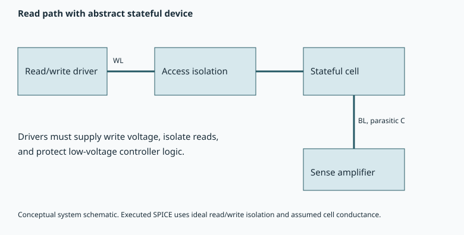

Chapter 5 · Circuits and arrays · 10–14 hours
Circuits, sensing, and arrays
Why can a faster cell produce a slower or more energy-intensive memory?
A single device is measured with instruments that supply clean pulses and detect small currents. An array must provide those functions with finite-area drivers, wires, access devices, and sense amplifiers. Its unselected cells also see voltages. The organizing question is whether a cell's improved state separation survives this shared electrical environment.
Prerequisites: Chapters 1–4, Ohm's law, capacitor charging. Objectives: derive sensing time and interconnect penalties, explain selection and disturb, distinguish access energy from switching energy, and construct a Pareto frontier under fixed capacity and reliability constraints. The polarization-sensing architecture review provides the research taxonomy; numerical array costs below are teaching assumptions.
5.1 The complete access path
A word line selects a row or controls transistor gates. A bit line carries the signal associated with a column. An access transistor or selection scheme isolates the requested cell from others. A sense amplifier converts a small analog difference into a digital decision; a write driver supplies the required pulse, potentially through level shifters and voltage-generation circuitry.
In a series NAND string, current passes through multiple transistors. Unselected gates receive pass biases intended to make their channels conductive without corrupting stored states. A low selected-cell write voltage does not automatically remove the energy or reliability penalty of biasing many unselected gates. In a crossbar, unintended current paths can instead create leakage or sneak-path problems. The relevant selection issue depends on topology.

5.2 Sensing time follows from charge
Let two stored states differ in read current by $\Delta I$. Let $C_{BL}$ be the effective bit-line capacitance and $\Delta V_{\mathrm{req}}$ the voltage difference required by the sense amplifier. If the current difference is approximately constant during signal development, capacitor charge balance gives $C_{BL}\,d(\Delta V)/dt=\Delta I$. Starting at zero differential voltage, integration gives
With synthetic values $C_{BL}=100$ fF, $\Delta V_{\mathrm{req}}=50$ mV, and $\Delta I=10$ µA, the minimum signal-development estimate is 0.5 ns. This excludes precharge, decoder delay, amplifier regeneration, and line resistance. Doubling the number of cells on a line can increase capacitance enough to erase a cell-current improvement.
The read margin must cover more than the difference between mean currents. Offset, thermal noise, device variation, coupling, supply noise, and read-history drift all affect the distributions. A reference current must be specified and, for multi-level storage, several decision boundaries are needed. More levels per cell improve nominal density but reduce separation between adjacent states at fixed window.
5.3 Longer wires can dominate latency
For a lumped resistor $R$ charging a capacitor $C$ from zero through a step $V_0$, Kirchhoff's law gives $C\dot V=(V_0-V)/R$. Solving with $V(0)=0$ yields $V(t)=V_0(1-e^{-t/(RC)})$. Reaching half the final voltage takes $RC\ln2$. This basic result explains why extra line resistance or capacitance matters even when the cell switches instantly.
A long line is distributed. If resistance and capacitance per length are $r$ and $c$, a simple far-end delay estimate has an $rcL^2$ dependence. One derivation sums each small series resistance $r\,dx$ multiplied by the capacitance it must charge downstream, $c(L-x)$: $\int_0^L rc(L-x)\,dx=rcL^2/2$. This is an Elmore-delay moment, not the exact half-voltage time. Driver resistance adds a term approximately $R_d cL$.
Breaking a long array into banks or subarrays shortens local wires and enables parallel accesses. It also replicates decoders, sense amplifiers, routing, and control. More banks can therefore reduce local latency and increase total bandwidth while increasing area and leakage. A bandwidth calculation must identify whether banks truly have independent data paths or share a narrower external interface.
5.4 Peripherals can erase a switching-energy gain
Charging a linear capacitor from zero to $V$ through a resistive driver draws $CV^2$ from an ideal supply: $CV^2/2$ remains in the capacitor and the other half is dissipated during charging. A conventional discharge then dissipates the stored half. Thus a complete charge–discharge event costs $CV^2$ unless charge recovery is explicitly implemented. Count transitions and voltage swings rather than applying the formula to every clock cycle indiscriminately.
Decompose access energy as $$\begin{aligned}E_{\mathrm{access}}={}&E_{\mathrm{cell}}+E_{\mathrm{lines}}+E_{\mathrm{decode}}\\&+E_{\mathrm{sense}}+E_{\mathrm{drivers}}+E_{\mathrm{control}}.\end{aligned}$$. If the cell contributes only 5% of this sum, reducing its energy tenfold reduces the total to $0.95+0.05/10=0.955$ of baseline, a 4.5% saving. No further gain appears unless another term changes. The same device change may enable a redesigned lower-voltage array, but that is a separate comparison with new assumptions.
The observed static loop energy in Chapter 3 is a full polarization cycle of a chosen capacitor. It cannot be inserted directly as read energy in this equation. The cumulative array project therefore uses a separate, explicit read-energy model. This avoids converting an attractive device number into an unsupported access claim.
5.5 State separation becomes an error probability
Assume two equally likely threshold distributions are Gaussian, have equal standard deviation $\sigma_V$, and have mean separation $\Delta V_T$. With a midpoint decision threshold, each state is misread if it fluctuates more than $\Delta V_T/2$ toward the other mean. The raw bit-error probability is
The complementary error function integrates the Gaussian tail. For $\Delta V_T=0.4$ V and $\sigma_V=0.05$ V, the separation to the decision boundary is four standard deviations and the calculated error is approximately $3.17\times10^{-5}$. This is a synthetic distribution example. Real tails can be asymmetric, non-Gaussian, correlated, and history-dependent; fitting only the central histogram is inadequate for extrapolating rare errors.
For $L_s$ stored levels with evenly spaced thresholds across a fixed window, neighboring means are separated by approximately $\Delta V_T/(L_s-1)$. This elementary geometry explains why multi-level density cannot be evaluated from window alone. Verify-write algorithms can tighten programmed distributions at the price of additional pulses, latency, and wear.
5.6 Optimize a finite design space transparently
The array project fixes capacity at 64 MiB and enumerates bank counts $B\in\{1,2,4,8,16,32\}$ and word widths $W\in\{32,64,128,256\}$ bits. It assumes 1,024 tiled local subarrays per bank. The effective row count per local subarray is $R=N_{\mathrm{bits}}/(1024BW)$. This tiling assumption controls the numerical result; it is not an observed layout.
The assumed latency model, in ns, is $t_a=2+0.002R+0.00002R^2+0.002W$. Its terms represent a fixed peripheral delay, linear and distributed-wire penalties, and width-dependent overhead. Energy per word, in pJ, is $E_a=0.02W+0.004RW+3B$. Area in mm² is $A_a=0.04N_{\mathrm{bits}}/10^6+0.04B+0.0002BW$, with an assumed 0.04 µm² bit footprint. Coefficients carry the units implied by these formulas and have no fabrication provenance.
The feasible set requires latency at most 15 ns, area at most 30 mm², and raw error at most $10^{-3}$. Within that set, one design dominates another if it is no worse in energy, latency, and area and strictly better in at least one. The Pareto set contains designs not dominated under these criteria. No arbitrary weighting is needed to display the tradeoff.

For the subsequent workload example, select the feasible design with minimum energy per byte rather than minimum energy per word. That distinction selects 32 banks and 256-bit words in this model, with 2.72192 ns latency and 5.208 pJ/byte. The modeled internal bandwidth exceeds the 80 GB/s system interface assumed later; reporting it as externally usable bandwidth would be an error. Enumeration certifies the optimum only over these 24 discrete candidates and these equations.
5.7 Follow a read signal from cell to decision
Our running design must deliver useful data from a fixed 64 MiB capacity. Before optimizing its organization, separate the cell's local signal from the signal that reaches the sense amplifier. For a switched-charge capacitor read, let $C_c$ be the selected cell's incremental capacitance, $C_b$ bit-line capacitance, $V_c$ the initial cell voltage, and $V_b$ the precharged bit-line voltage. If an ideal access switch connects them and no external charge enters during equilibration, charge conservation gives final voltage $V_f=(C_cV_c+C_bV_b)/(C_c+C_b)$.
The bit-line change is $V_f-V_b=[C_c/(C_c+C_b)](V_c-V_b)$. A large cell-state voltage therefore produces a small line signal when $C_b\gg C_c$. If the event also releases a switched polarization charge $\Delta Q_P$, add that charge to the numerator under a compatible charge convention. The crucial physical object is the charge transferred into the actual load, not the voltage reported by a high-impedance laboratory instrument. A switched-charge read may alter the stored state and require restoration.
For a FeFET current read, a different path applies. The selected transistor changes line current, which charges or discharges a line capacitance. The earlier $C_b\Delta V/\Delta I$ estimate assumes both state currents remain approximately constant over the developing voltage. If drain current falls as the bit line discharges, the actual time follows an integral: $t=\int C_b\,dV/I(V)$ over the sensing swing. A single current sampled at one drain voltage can underpredict delay if the current declines strongly along that path.
Take a synthetic 2 fF cell capacitance and a 100 fF line. Charge sharing attenuates a 0.2 V initial difference to about 3.92 mV. The same 0.2 V threshold separation in a transistor is not subject to this particular charge-sharing formula; it must first be converted to current through a transport model. Comparing those two architectures using a common numerical voltage window confuses different observables. The polarization-sensing architecture review is useful because it organizes alternatives by how polarization is sensed, which determines the surrounding circuit.
5.8 Derive a decision threshold before quoting a bit-error rate
Let the scalar read observation $Y$ have conditional Gaussian distributions with means $\mu_0,\mu_1$, common standard deviation $\sigma$, and prior bit probabilities $\pi_0,\pi_1$. Suppose a false 0-to-1 decision costs $C_{10}$ and a false 1-to-0 decision costs $C_{01}$, both positive. Choose bit 1 when the weighted likelihood $C_{01}\pi_1 f_1(Y)$ exceeds $C_{10}\pi_0 f_0(Y)$. This minimizes expected decision cost for the assumed distributions and costs. Equal priors and equal costs are additional assumptions, not consequences of having two states.
Taking the log likelihood ratio and expanding the two squared Gaussian residuals cancels the $Y^2$ terms. With $\mu_1\gt\mu_0$, the resulting threshold is
The midpoint follows only when the logarithm vanishes. An offset in the sense amplifier moves the implemented threshold away from the intended one, increasing one conditional error while decreasing the other. Reporting only average raw error can conceal a strong bit-value asymmetry. With unequal state variances the log-likelihood ratio is quadratic and can have more than one crossing; a single midpoint comparator may no longer be optimal.
For equal priors and costs, let the mean separation be $W=\mu_1-\mu_0$. If $z_*=\Phi^{-1}(1-p_*)$, where $\Phi$ is the standard normal cumulative distribution, the target error $p_*$ requires $W\ge2z_*\sigma$. This is the downward design equation: it translates a required raw error into a margin. For $p_*=10^{-3}$ and $\sigma=0.0532$ V, required separation is 0.328801 V. A 0.4 V window leaves some room for additional noise, but not an unlimited amount.
If every new source simply broadens the effective Gaussian distribution, the maximum total standard deviation for that window is $0.4/(2z_*)=0.0647201$ V. The difference from 0.0532 V is 0.0115201 V. This is an additive standard-deviation budget only for a worst-case bookkeeping convention. For statistically independent zero-mean noise, variances add, so the allowable new standard deviation is $\sqrt{0.0647201^2-0.0532^2}$, approximately 0.0369 V. State which convention is being used; adding standard deviations and adding variances answer different questions.
Common noise does not average like independent mismatch
Suppose each of $n$ cells has a read offset $X_i=G+L_i$, with shared Gaussian component $G$ of variance $\sigma_g^2$ and independent local components $L_i$ of variance $\sigma_l^2$. The average offset has variance $\sigma_g^2+\sigma_l^2/n$. Increasing the number of cells suppresses only the independent part. Supply or reference drift can therefore remain after extensive averaging. A calibration based on the average may also miss local tails, while a calibration per cell has storage and access costs.
For array qualification, examine correlations by row, column, die, and time. A single histogram pooled across all devices cannot reveal whether neighboring bits fail together. Chapter 6 shows why that distinction changes the error-correction budget dramatically. The needed source evidence is not merely a narrower threshold distribution; it is a distribution and correlation model under the intended operating history.
5.9 Discretize the wire and recover the length law
Model a line as $N$ equal segments, each with resistance $r_s$ and a shunt capacitance $c_s$ at its downstream node. The Elmore first moment at the far end adds each segment resistance multiplied by all capacitance beyond it. The first segment charges $N$ capacitors, the next charges $N-1$, and so on. The total is $r_sc_s\sum_{k=1}^{N}k=r_sc_sN(N+1)/2$. This exact sum for the discrete ladder makes the near-quadratic scaling explicit.
The depth laboratory evaluates 32, 64, 128, and 256 segments, obtaining 528, 2,080, 8,256, and 32,896 in units of $r_sc_s$. Doubling segments approaches a factor four in the line contribution. The calculation is a first-moment estimate, not a transistor-level transient simulation or exact crossing time. Its value is diagnostic: if a proposed cell improvement affects none of these resistances or capacitances, it cannot eliminate the wire penalty.
At fixed total capacity, splitting rows across more banks can reduce local line length. But each bank needs some independently active circuitry, and all banks may still meet at a shared bus. A useful architectural model therefore has three levels: local cell and line delay, bank service interval, and global interface rate. Combining them prematurely into one access-time number loses the bottleneck structure. The existing 24-choice sweep exposes local organization; the workload chapter imposes the shared 80 GB/s cap separately.
Repeaters can change the wire scaling by breaking a long electrical path into driven segments. They also add area, leakage, switching energy, and voltage-domain constraints. A high-voltage program line may need devices that cannot be replaced by ordinary low-voltage logic repeaters. The derived quadratic term is a reason to investigate segmentation, not proof that a particular repeater design is compatible with the ferroelectric process.
5.10 Selected-cell success can coexist with array failure
A write-selection scheme must deliver a switching field to the target while keeping every unselected device within its allowed stress history. In a simple half-select scheme, some unselected cells receive a fraction of the write voltage. If the selected pulse has failure probability $p_w$ and each half-selected exposure has disturb probability $p_h$, array-level correctness depends on both. A low selected-cell write error says nothing about how many neighboring opportunities for disturb are created.
If an operation exposes $M$ other cells and each has disturb probability at most $p_h$, the union bound gives probability of any disturb at most $Mp_h$. This bound needs no independence. With repeated operations, the number of exposures can become enormous. The actual probabilities may depend on prior half-select pulses because polarization and traps retain history. A minor-loop model or pulse-resolved state model is therefore more relevant to selection analysis than the saturated major loop alone.
For a NAND string, pass voltages must turn on unselected transistors despite their different stored thresholds. Raising pass bias can improve current continuity while increasing stress on every passed cell. For a resistive crossbar, unwanted paths through other cells can contaminate read current and require selectors or a different bias scheme. These are topology-specific mechanisms. The vertical ferroelectric-NAND perspective should be read for the architecture being proposed and its unresolved integration questions, not as evidence that an ideal isolated-cell waveform already establishes a working array.
The course's SPICE cell uses ideal isolation switches precisely so the state equation and readout can be inspected. Replacing those switches with real selection devices is a substantive extension: their leakage, voltage limits, on-resistance, body effects, and parasitic capacitances change both programming and sensing. A schematic symbol that appears to isolate a cell is not evidence that a process supplies a suitable device. This is where circuit feasibility begins to depend on a process design kit.
5.11 Audit the optimum against the access pattern
The current sweep chooses minimum energy per byte, but its implied workload uses every byte returned. Let $u_b$ be the useful-byte fraction of an access, with $0\lt u_b\le1$. Effective energy per useful byte is $E_a/[u_b(W/8)]$. A wide access that looks efficient at $u_b=1$ can be wasteful when a workload needs only one field. The array optimum is therefore conditional on spatial locality, the tendency for nearby data to be used together.
Similarly, aggregate bank bandwidth assumes traffic is distributed across banks. If all requests map to one bank, the other banks' service capacity is idle. Address interleaving, hashing, scheduling, and data layout can spread load, but may change row locality or require additional metadata. A credible benchmark reports the address distribution and bank-conflict behavior. Perfectly uniform traffic is a useful upper-bound workload, not a neutral default for every application.
The Pareto frontier is also conditional on uncertainty. A design just inside the area limit can become infeasible after routing overhead; a design just inside the read-error limit can fail after temperature drift. Rather than hiding these constraints in a weighted score, keep explicit slack: area margin, timing margin, and noise margin. Recompute the feasible set over plausible parameter ranges. If the selected design changes frequently under small coefficient perturbations, the model supports a family of candidates and a measurement priority, not a uniquely justified architecture.
1. Compare wide and narrow accesses under poor locality
Use the earlier 32-bit, 30 pJ and 256-bit, 120 pJ accesses. A request needs four bytes and cannot reuse the unused bytes. Which has lower energy per useful byte?
Solution. The narrow access uses all four bytes, giving 7.5 pJ per useful byte. The wide access returns 32 bytes but uses four, giving 30 pJ per useful byte. Its apparently superior 3.75 pJ per transferred byte is irrelevant to this request pattern. If eight nearby four-byte requests can share one wide fetch without extra cost, the wide access regains its advantage. The architecture comparison therefore needs a reuse model.
2. Derive a bank-count scaling before enumerating
Assume local wire energy at fixed capacity is $a/B$ and replicated bank overhead is $bB$, with positive constants and continuous bank count $B\gt0$. Find the minimum and explain its limits.
Solution. Differentiating $E(B)=a/B+bB$ gives $E'=-a/B^2+b$, hence $B_* =\sqrt{a/b}$. The second derivative $2a/B^3$ is positive, so this is the unique continuous minimum. Real bank counts are discrete and constrained by area and interface organization. Evaluate allowed integers near the stationary point and any active boundaries. The formula explains the competing trends but does not replace the actual finite sweep or justify its assumed coefficients.
3. Distinguish a wire improvement from a cell improvement
A cell-current change halves signal-development time. The original access consists of 1 ns signal development, 2 ns wire delay, and 2 ns other delay. What is the new latency?
Solution. Under additive nonoverlapping stages, latency changes from 5 ns to 4.5 ns, an 11.1% speedup ratio or a 10% latency reduction. If the signal and wire effects overlap, adding the three measured numbers may already double-count part of the transient. Establish the stage model before applying the arithmetic. The example shows why an isolated-cell factor does not directly become an array-access factor.
5.12 Regeneration adds another time and noise scale
Signal development on a line is only the first part of a sense operation. A regenerative latch uses positive feedback to turn a small differential voltage into a full logic-level decision. Near its balanced point, let $v_d$ be the differential voltage, $C_s$ effective node capacitance, and $g_{\rm reg}$ the net small-signal regenerative conductance after losses. For positive $g_{\rm reg}$, the linearized dynamics is $C_s\dot v_d=g_{\rm reg}v_d$. Its solution is $v_d(t)=v_d(0)e^{t/\tau_s}$ with $\tau_s=C_s/g_{\rm reg}$.
If the latch must reach differential magnitude $V_L$, the regeneration time is $t_r=\tau_s\ln[V_L/|v_d(0)|]$ while the linearized model remains appropriate. A tenfold smaller initial signal adds $\tau_s\ln10$ to the resolution time. If the initial signal is exactly zero in a noiseless symmetric model, it never chooses a side. Real noise and mismatch break the symmetry, but the result may then be wrong. A sense amplifier does not create reliable information from zero separation.
Let input-referred offset be $V_{\rm os}$. The relevant initial sign is determined by the cell-generated differential signal minus that offset plus noise. A nominal signal above zero does not establish a low error rate unless its distribution relative to offset is known. Longer integration can improve signal amplitude, but eventually leakage, low-frequency drift, disturb, or saturation can dominate. Optimizing read time therefore requires a circuit noise and signal model rather than assuming arbitrary averaging always helps.
A sampled capacitor in thermal equilibrium with a resistive path has voltage variance $k_BT/C$. This follows from equipartition: mean stored energy $C\mathbb E[v^2]/2$ equals $k_BT/2$ for the quadratic degree of freedom. For 100 fF at 300 K, the corresponding RMS voltage is approximately 0.204 mV. That is much smaller than the earlier illustrative 50 mV sensing swing, but it is not the total circuit noise. Amplifier noise, reference uncertainty, coupling, and device-state variation remain separate contributions.
Increasing capacitance reduces this sampled thermal voltage noise while increasing the charge and time needed to develop a given signal. If the current difference is fixed, signal after integration time $t$ is $\Delta I t/C$, while this thermal-noise scale is proportional to $1/\sqrt C$. Their ratio scales as $\Delta I t/\sqrt{k_BT C}$. Larger capacitance actually worsens that ratio at fixed time under this restricted model. The result explains why minimizing one noise source in isolation can harm overall read performance.
A constrained sensing-time exercise
Assume the total input-referred uncertainty is a fixed Gaussian standard deviation $\sigma_n$, and a current difference creates line signal $\Delta V=\Delta I t/C_b$. To obtain midpoint error at most $p_*$ for two states separated by that signal, require $t\ge2z_*\sigma_n C_b/\Delta I$. This is a minimum integration-time condition under a chosen noise model. Add decoder, precharge, and regeneration times to obtain a complete nonoverlapping latency budget. If those stages overlap, replace the sum by a schedule rather than subtracting an arbitrary overlap factor.
For synthetic $\sigma_n=5$ mV, $C_b=100$ fF, $\Delta I=10$ µA, and $p_*=10^{-3}$, the condition gives about 0.309 ns. A 50 mV signal-development target instead gives 0.5 ns. These are compatible: the latter has more nominal margin under the same noise assumption. Neither result includes the state-distribution tails established by device variation, and neither is a characterized sense-amplifier specification.
4. Why does a faster latch not repair overlapping state distributions?
Suppose a redesigned latch halves regeneration time but leaves cell signals, offset, and input noise unchanged.
Solution. It can reach a full logic level faster after the initial differential sign is established. It does not change how often that sign favors the wrong state. Reliability improves only if the redesign also changes the relevant offset/noise or permits a better sensing schedule. Timing and error are related through the initial signal, but a reduction in one stage's time is not automatically a reduction in decision error.
5.13 Foundation exercises and solutions
5. A doubled array length
What happens to the distributed-wire contribution if line length doubles at fixed cross-section and loading per length?
Solution. The $rcL^2/2$ term increases fourfold. The driver-resistance term $R_dcL$ doubles. A single “wire delay scales with length” statement hides these different contributions.
6. Energy scope
A cell consumes 1 pJ and peripherals 19 pJ. Reducing cell energy to 0.1 pJ changes complete access energy by what percentage?
Solution. Initial energy is 20 pJ; final is 19.1 pJ. Saving is 0.9/20=4.5%. The cell improved tenfold, but the access did not. Lowering driver voltage or shortening wires could improve another term, requiring a separately justified redesign.
7. Correct optimization objective
A 32-bit access costs 30 pJ and a 256-bit access 120 pJ. Which is more efficient per transferred byte?
Solution. The first moves 4 bytes at 7.5 pJ/byte. The second moves 32 bytes at 3.75 pJ/byte. The wider access wins only if the workload uses its bytes; reading 32 bytes for a one-byte request wastes bandwidth and energy.
8. Challenge the synthetic optimum
Double the per-bank overhead and rerun projects/stack.py arrays. What must be reconsidered?
Solution. Recompute feasibility and the Pareto set, then choose the workload-relevant energy-per-byte point. The old minimizer need not survive. Since workload and system stages read the chosen array result, rerun those stages too; retaining their old outputs would mix incompatible assumptions.
You can now trace a device improvement into selection, sensing, wiring, and periphery. The next chapter adds the controller, error correction, and the distinction between memory capacity and usable service.